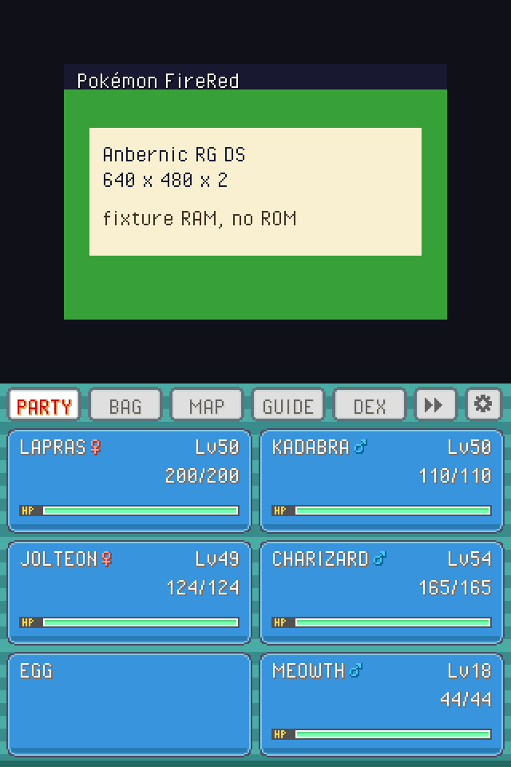

Port Linux del companion dual-screen di PokeDaisy: il gioco GBA sul pannello
superiore, party / borsa / mappa / lotta / guida su quello inferiore.
Nessuna ROM inclusa; la demo qui sotto usa RAM di test.
schermo superiore · gioco 640×480

schermo inferiore · companion 640×480
Sul dispositivo
Compila per aarch64 (o copia il binario pokedaisy).
Metti lo script in ports/PokeDaisy.sh e i file nella stessa cartella.
Copia i tuoi dump .gba in roms/ (FireRed rev 1 o Emerald).
Avvia da Linux Anbernic / Rocknix. Due pannelli: layout dual.